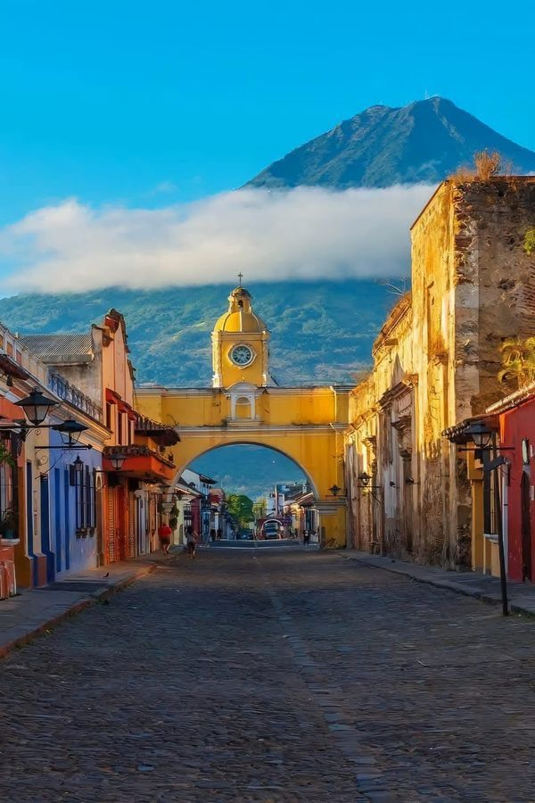
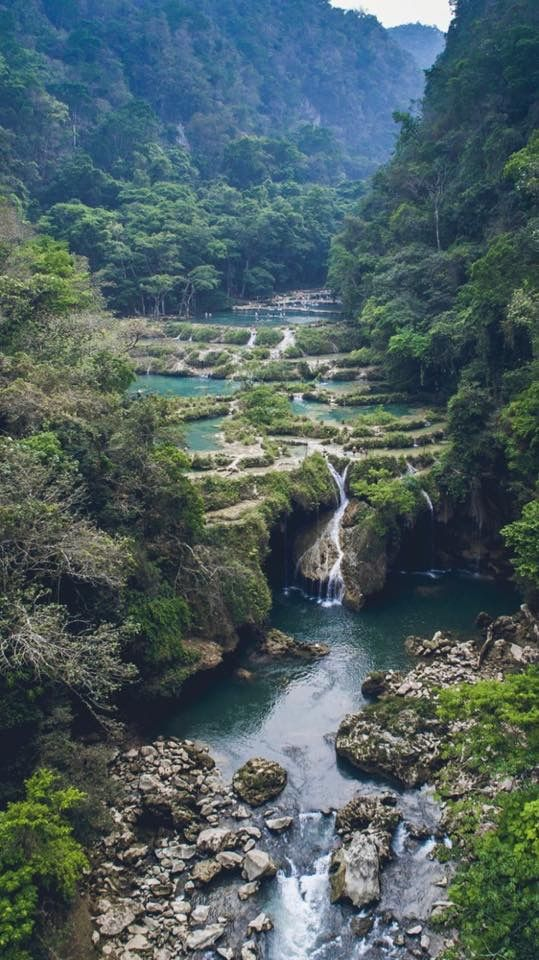
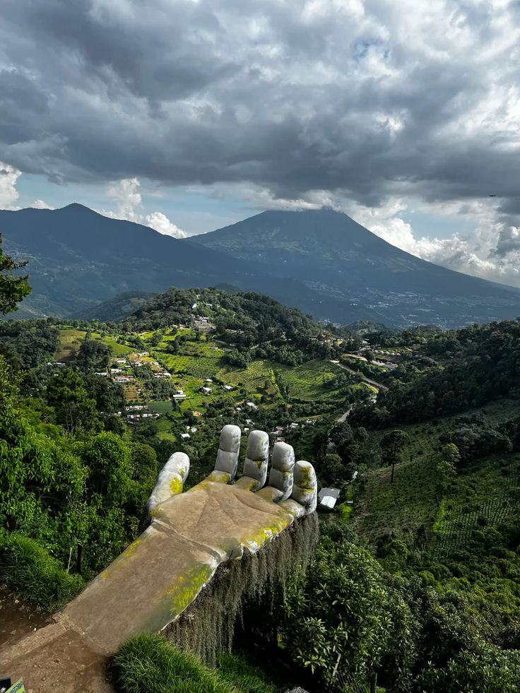

Antigua Guatemala
Ciudad colonial declarada Patrimonio de la Humanidad, famosa por su arquitectura barroca y procesiones religiosas.

Petén
Región selvática que alberga las majestuosas ruinas mayas de Tikal, uno de los sitios arqueológicos más importantes del mundo.

Lago de Atitlán
Considerado uno de los lagos más bellos del planeta, rodeado de volcanes y pintorescos pueblos indígenas.
